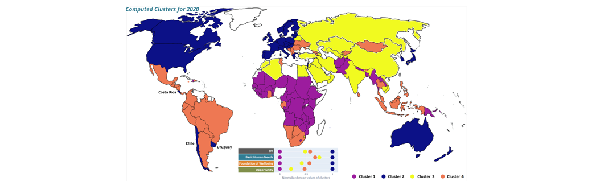

Impulsing Social Progress
for the social progress imperative

We tend to relate the success of a country to economic growth, assuming that economic growth and social progress go together. The Social Progress Imperative
is a nonprofit organization, that was founded in 2012 and is best known for the calculation of the Social Progress Index (SPI).
The SPI is based on multiple indicators and was created as an alternative to GDP, to assess the environmental and social performance of a country.
It is a framework linked to the Sustainable Development Goals as defined by the United Nations.
The SPI provides information on three fundamental questions about society:
- the basic needs of survival (Basic Human Needs)
- the building blocks of a better life (Foundations of Wellbeing)
- the opportunity of every person to improve their lives (Opportunity)
This three dimensions are rooted in 52 base indicators. The SPI sums all indicators together into a single value between 0 and 100.
In this project I performed K nearest neighbor unsupervised machine learning on a data set of 160 countries, covering the last 10 years (2011-2020),
to identify countries with highest similarities, based on their social progress.
This allows to derive a list of countries that are most similar to a given country, a functionality that can now be added to SPI's webpage.
Using dimensionality reduction they mapped the 52 dimensions provided by SPI to a much smaller set of key features, which allow to directly visualize similarities and differences between countries. For this purpose, they created interactive and user-friendly visualizations that can allow stakeholders of a society to interact with the data provided by the Social Progress Imperative.
klöklkllllllllllllllllllllllllllllljjjjjjjjjjjjjjjjjjsssssssssssssssssssssssssoooooooooooooooooooooooooooooooooklö